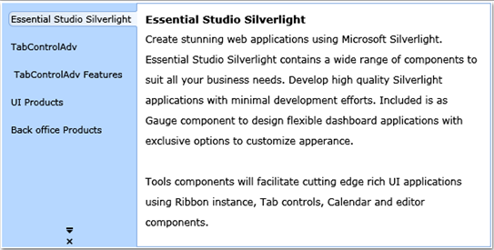

We can rotate the Text by 90 degrees when the TabStrip is placed in vertical. The user can do this by setting the RotateTextWhenVertical property value to true. We may set this property in xaml or code behind. This rotation will reflect on the Left and Right TabStripPlacement modes.
|
[Xaml]
<syncfusion:TabControlAdv Name="MyTabCtrl" RotateTextWhenVertical="True"> |
|
[C#]
TabControlAdv myTabCtrl = new TabControlAdv(); myTabCtrl.RotateTextWhenVertical = true; |

Figure 826: Rotated Text on Vertical Placement